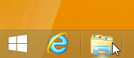
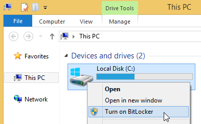
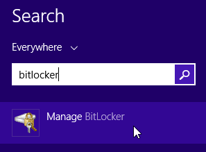
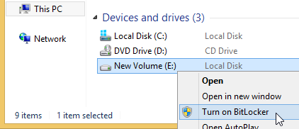
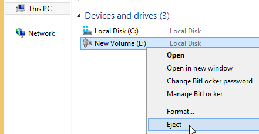
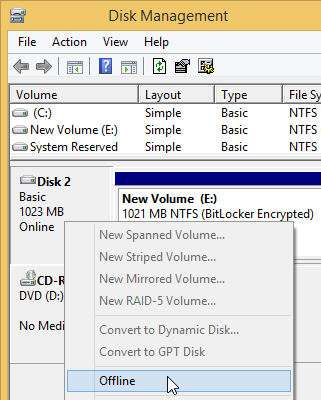

Encrypting with BitLocker:
If you have the
system drive wanting to encrypt with BitLocker:
-
Encrypt the system drive by BitLocker. Open the Explorer:

-
Click the drive C: (or any other drive where system encryption is
or was used) using the right mouse
button and select
Turn on BitLocker
:

Or' use search in the
Start
menu or screen:

If you have a
non-system drive:
-
If you have a spare or backup drive (having sufficient space
to store all data you need to migrate to BitLocker)' encrypt it by
BitLocker (click the drive in Explorer using the right mouse
button and select
Turn on BitLocker
):

-
Copy all data from the drive to the drive
encrypted by BitLocker.
To mount a drive encrypted by BitLocker' open the drive in Explorer.
To dismount a removable drive encrypted by BitLocker' use
Eject
menu item or
Safely Remove
icon:

To dismount a non-removable drive encrypted by BitLocker' use
Offline
item in the context menu of
the drive in
Disk Management
window:

To mount the drive again' use
Online
item in the context menu of the drive.